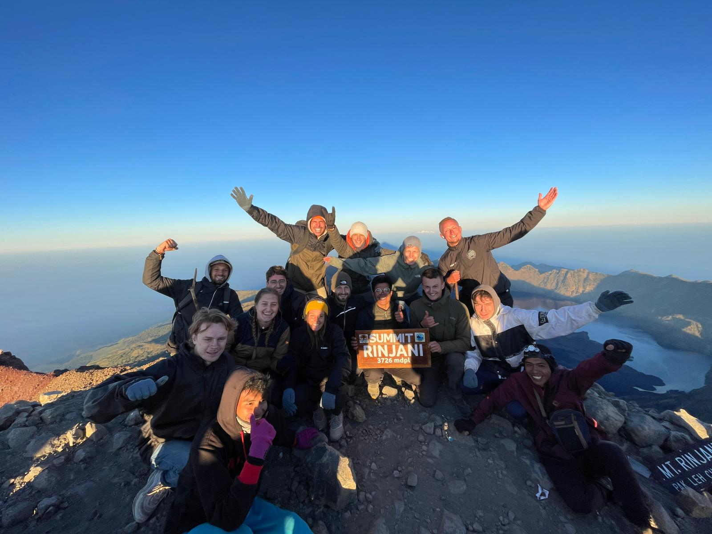
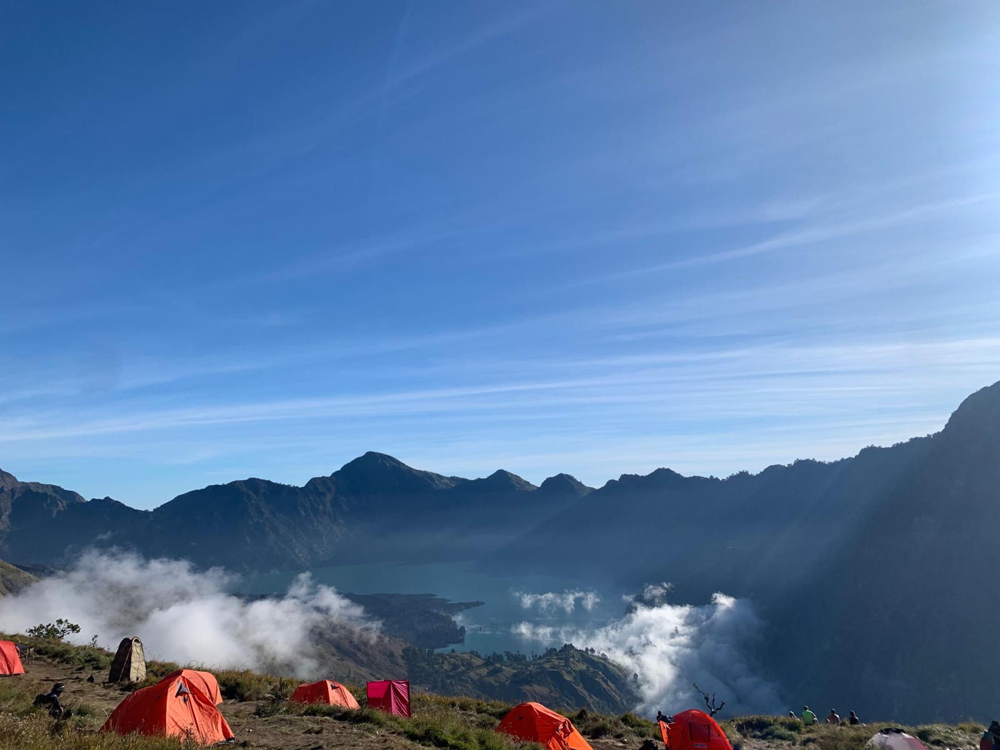
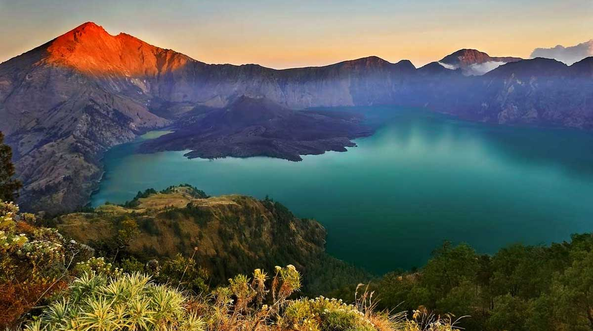

Summit Rinjani Program 3 days 2 nights – 3,726 M
Summit Rinjani 3 days designed to explore all sides of Mount Rinjani from the Sembalun trekking trail and return by Senaru trekking route. The Summit Rinjani program for 3 days will give you the best trekking experience and adventure trek.
Overview summit Rinjani 3 days :
Sembalun trek route offers grand views of the grass savanna over the eastern entrance Spectacular Sunset views of Lake Segara Anak within the volcano’s crater Best sunrise over the summit Unique Lake of Segara Anak and hot spring water Amazing view from crater RIM Senaru over Segara Anak view ( Sunset and Sunrise ) Incredible view of grand tropical forest and Gili’s Note:
- This trekking program is NOT suitable for beginner trekkers
- Required a good level of fitness and strong walks
- Tours can leave any day except weather conditions do not permit
#Trekking itinerary:
Day 01. Breakfast at base camp Senaru, lunch, and dinner at the mountain.
- Wake up at 6.00 AM and get breakfast
- 07.00 AM transfer to Sembalun village for 45 -60 minutes drive
- Registration at Rinjani Information Center ( RIC ) 1051m
- Start the trek to POS 1 ( Pos Pemantauan 1.300 M ) 1 hour 30 minutes walk, take a rest 15 minutes at POS 1
- Walk to POS 2 for 30 minutes ( Pos Tengengean 1.500m ),Lunch will be prepared at POS 3 and take a rest for 1 hour 30 minutes.
- Continue to POS 3 ( Pada Balong 1.800m ), a 1-hour walk
- Continue walking up another 3 hours to Crater Rim ( Plawangan Sembalun 2.639m )
- Dinner and Overnight at Crater Rim Sembalun, and enjoy the sunset and sunrise for the next day
#Overview trail on day 1:
- Distance: 9 km
- Walk duration: 6-7 hours
- Difficulty: Moderate
- Highest point: 2,639 m ( Plawangan Sembalun crater rim )
- Height gain: +1,539 m

Day 02. Breakfast, Lunch, and Dinner at the Mountain.
- Wake up at 02.30 Am, have some light breakfast then leave at 03.00 AM
- Heading Summit Rinjani ( 3.726m ), walking time approximately 3 hours and 20 minutes
- Enjoy the sunrise from the summit you can see all of Lombok Island, Bali, Sumbawa, and Segara Anak Lake
- Back to camp to get breakfast and take a rest
- Walk down to Segara Anak Lake and Hot Spring water for 3 hours
- Lunch will be provided by the Lake Segara Anak, hot spring water just a walk 100m from Lake
- After enjoying the hot spring water, prepare to climb up to the crater Rim of Senaru 3 hour’s walk
- The camp will prepare on the Crater Rim of Senaru, and enjoy an incredible sunset over the mountain Agung in Bali.
- Enjoy Dinner and take a rest
- Distance: 5km
- Duration: 6-7 hours
- Difficulty: very difficult
- Highest point: 3726 m (mount Rinjani trekking summit )
- Height gain: +1,087 m
- Distance: 3,4 km
- Duration : 3-4 hours
- Difficulty: Moderate
- Highest point: 2.639 m (Sembalun crater rim )
- Height gain: -639 m
#Overview trail on day-2 from crater rim Sembalun to Summit:
#Sembalun crater Rim to Segara Anak 2,000 M :
#Segara Anak lake to crater Rim Senaru 2.641 M :
- Distance: 3,2 km
- Duration : 3-4 hours
- Difficulty: Moderate
- Highest point: 2.639 m (Sembalun crater rim )
- Height gain: +641 m

Day 03. Breakfast and Lunch at the mountain
- After breakfast and enjoying the sunrise prepare to walk down to Senaru village
- Lunch will prepare on the way between POS 1 or POS EXTRA.
- Arrive at Senaru Rinjani Trekking Centre around 13.00 PM.
- Prepare yourself at our office for another transfer to Senggigi, Mataram, or Bangsal harbor if you wish to come to Gili island.
#Overview trail on day-3 from Crater Rim Senaru to Senaru village
- Distance: 8 km
- Duration: 5-6 hours
- Difficulty: Moderate
- Highest point: 2.641 ml (Senaru Crater Rim)
- Height gain: -2040 m

Before trekking you should prepare Day pack, as Personal day pack :
- Torch or Flashlight
- 1pair champ shoes/trek shoes are good
- Toiletries
- Sunblock/lotion, hat/cap, sunglasses
- Spray for muscle/balm
- Insect repellent
- Camera, Handy cam (Manual or Digital)
- Small towel
- 2/3 paces of T-Shirts
- Long trek pants/windproof
- Windproof Jacket
- 2 paces of shorts
- Trekking poles (optional)
- Sandals (optional)
- Swimming Suite (optional)
- Binocular (optional)
- Fishing Gear (optional)
- Garbage Plastic can (optional)
#How to book the tour
1. Send us inquiry to our booking form, email at uchihaalnolimit@gmail.com or Whatsapp at +6282340212784 Mr. Al Zoldyck (for speedy replay)
2. Once your booking is confirmed, send a copy passpport (First name, Last name, Gender, Place, and date of birth)
3. Share your arrival schedule at Lombok airport or any harbor on Lombok island for pick up services
If you need more info about this package, please contack us every question will be warmly answered immediately